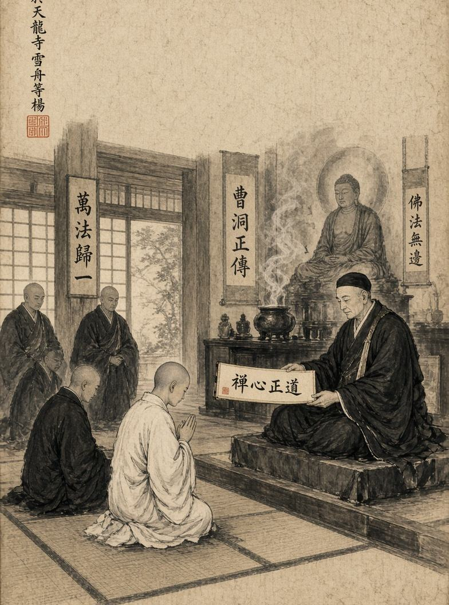
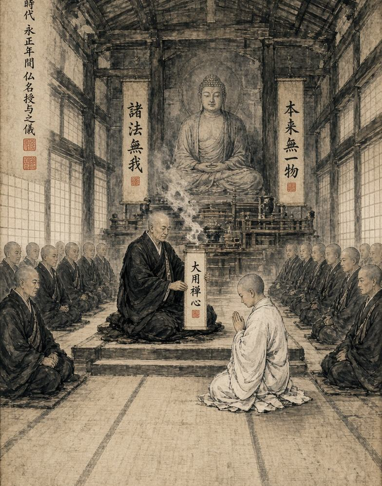

Буддийские имена
Вступая в Сангху, человек оставляет позади часть своей прежней жизни. Со временем его путь в монастыре становится неотделим от его характера, поступков и отношения к Дхарме.
Вступая в Сангху, человек оставляет позади часть своей прежней жизни. Со временем его путь в монастыре становится неотделим от его характера, поступков и отношения к Дхарме. Поэтому монах, который долго служит храму и заслужил доверие Сангхи, может получить буддийское имя.
Буддийское имя становится не просто новым обращением. Оно символизирует новый этап жизни человека и качества, которые он проявил во время своего служения. Такое имя может быть связано с мудростью, спокойствием, состраданием, стойкостью, терпением или другими качествами.

Получение имени
Буддийское имя не выдаётся сразу после вступления в храм. Молодой монах сначала должен прожить определённое время в Сангхе, пройти испытание служением и показать, что его намерения действительно серьёзны. Решение о присвоении имени принимает Бонза вместе со старшими монахами. При этом учитывается не только срок службы, но и то, каким человеком стал монах. Один может получить имя за исключительное милосердие, другой - за спокойствие и мудрость, третий - за преданность храму и готовность помогать другим.
Таким образом, два монаха, проведшие в храме одинаковое количество времени, могут получить совершенно разные имена.
Церемония
Присвоение имени может сопровождаться отдельной небольшой церемонией. Монах предстаёт перед Сангхой, после чего Бонза объявляет его новое имя и объясняет его значение. С этого момента имя становится частью его жизни в храме. Другие монахи могут обращаться к нему по новому имени, а сам монах принимает его как напоминание о качествах, которым он должен соответствовать. Если человек получил имя, связанное с мудростью, но постоянно действует необдуманно, это становится противоречием, которое он должен преодолеть. Имя не доказывает, что монах уже достиг совершенства. Оно показывает, к чему он должен стремиться.

Мир приходит изнутри. Не ищи его снаружи.Будда Шьякмуни